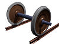

axle

Definition: An axle or axletree is a central shaft for a rotating wheel or gear. On wheeled vehicles, the axle may be fixed to the wheels, rotating with them, or fixed to the vehicle, with the wheels rotating around the axle. In the former case, bearings or bushings are provided at the mounting points where the axle is supported. In the latter case, a bearing or bushing sits inside a central hole in the wheel to allow the wheel or gear to rotate around the axle. Sometimes, especially on bicycles, the latter type of axle is referred to as a spindle.
Source: Wikipedia
Wikipedia Page (Something wrong with this association? Let us know.)
Wikidata Page (Something wrong with this association? Let us know.)
Occurs in: